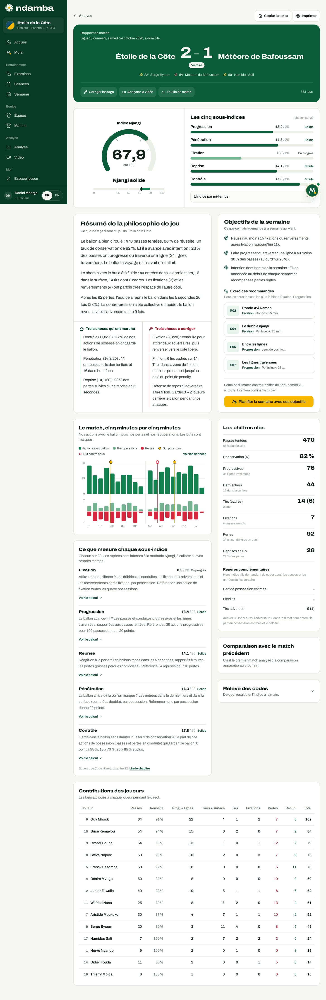
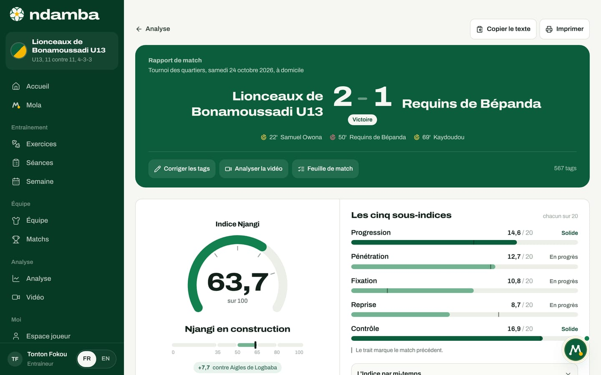
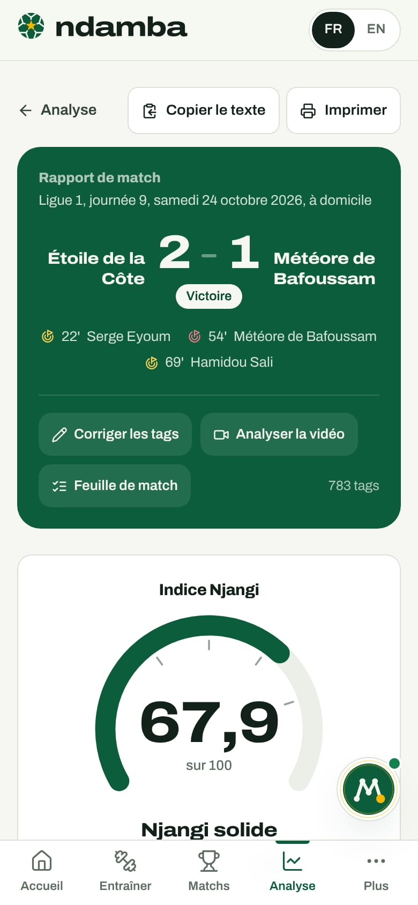

Le rapport de match et l’Indice Njangi
Lire un rapport de match de haut en bas avec les vrais chiffres de la démo : le score, la jauge de l’Indice Njangi et sa bande, les cinq sous-indices et leurs niveaux, les mi-temps, les objectifs et les exercices de la semaine, puis copier, imprimer ou corriger les tags.
10 min de lecture
Le soir d’un match, un entraîneur repart avec le score et une impression. Le score ne dit pas comment l’équipe a joué, et l’impression change avec l’humeur. Le rapport de match transforme les tags du direct (chapitre 12) en une lecture toujours construite de la même façon : une note sur 100, l’Indice Njangi, qui dit si l’équipe a possédé avec intention ; cinq sous-indices qui disent où le jeu a avancé et où il a calé ; et la semaine d’entraînement qui en découle. C’est le cœur de la promesse de Ndamba : une mesure commune, la même à l’académie et en sélection, pour savoir saison après saison si un modèle de jeu progresse. Ce chapitre suit le rapport de haut en bas avec le match de la démo club pro : Étoile de la Côte contre Météore de Bafoussam, 2‑1, en Ligue 1, le samedi 24 octobre 2026.
Ouvrir un rapport
Trois chemins mènent au rapport :
- Dans le menu, groupe Analyse, touchez Analyse, puis le match dans la liste Matchs analysés (chapitre 14).
- À la fin du direct, le bouton Terminer et voir le rapport l’ouvre aussitôt.
- Demandez à Mola Analyse mon dernier match : son résumé se termine par le bouton Lire le rapport complet.
Sans aucun tag, la page affiche Pas encore de tags pour ce match : « Le rapport se construit à partir des tags du direct. Lancez le direct pour ce match, pendant la rencontre ou après coup. » Elle propose Lancer le direct ou Analyser la vidéo ; seuls les tags du direct construisent le rapport (chapitre 14).
L’en-tête : le score, les buts et les actions

En haut, le lien Analyse ramène à la page d’analyse ; à droite, Copier le texte et Imprimer (voir plus bas).
Le bandeau vert porte Rapport de match, la compétition, la date et le lieu : « Ligue 1, journée 9, samedi 24 octobre 2026, à domicile ». Sous le score, une pastille : Victoire, Nul ou Défaite, ou À venir et En cours pour un match non terminé. Les buts suivent avec leur minute (22e et 69e pour l’Étoile, 54e pour l’adversaire), en doré pour nous, en rouge pour l’adversaire, avec le nom du buteur quand le but lui a été attribué pendant le direct.
Sous un trait, trois actions et un compteur :
- Corriger les tags rouvre le direct du match, dont le journal permet de supprimer un tag ou de changer le joueur attribué (chapitre 12). Le rapport se recalcule tout seul.
- Analyser la vidéo ouvre le projet vidéo lié à ce match, ou le crée (chapitre 14).
- Feuille de match ouvre la fiche du match (chapitre 11).
- À droite, le nombre de tags du rapport : 783 tags.
La jauge de l’Indice Njangi et sa bande
Sous l’en-tête, à gauche, la jauge Indice Njangi : le chiffre avec une décimale (67,9), « sur 100 », le nom de la bande, puis une réglette en cinq zones, aux seuils 35, 50, 65 et 80, avec un trait à la place exacte de l’Indice.
| Indice | Bande affichée |
|---|---|
| moins de 35 | Possession sans intention |
| de 35 à moins de 50 | Intention fragile |
| de 50 à moins de 65 | Njangi en construction |
| de 65 à moins de 80 | Njangi solide |
| 80 et plus | Njangi de champion |
Avec 67,9, l’Étoile est en Njangi solide, juste au-dessus de 65. Quand un match analysé précède celui-ci, une pastille sous la jauge donne l’écart (« +7,7 contre Aigles de Logbaba » dans la démo U13). Ces seuils viennent du chapitre 32 du Code Njangi : ce sont des repères internes à la méthode, à calibrer sur vos propres matchs.
Les cinq sous-indices et leurs niveaux
À droite, Les cinq sous-indices, « chacun sur 20 », dont la somme fait l’Indice. Chacun porte une barre et un niveau :
- À construire : moins de 8 sur 20 (barre rouge) ;
- En progrès : de 8 à moins de 13 (barre vert clair) ;
- Solide : 13 et plus, la zone du modèle (barre vert foncé).
Le calcul part de quatre totaux. Ici, 470 passes tentées (412 réussies, 58 perdues) ; 92 pertes en tout (les 58 passes perdues et 34 pertes en conduite ou en duel) ; 106 possessions, car une possession finit par une perte ou par un tir (14 tirs) ; et 504 actions de possession (les passes et les pertes en conduite). Les cinq calculs du match :
| Sous-indice | Question | Calcul | Note | Niveau |
|---|---|---|---|---|
| Progression | Le ballon avance-t-il ? | 20 × (76 progressives + 34 lignes traversées) / (0,35 × 470 passes) | 13,4 | Solide |
| Pénétration | Arrive-t-il là où l’on marque ? | 20 × (44 entrées dans le dernier tiers + 2 × 16 entrées dans la surface) / 106 possessions | 14,3 | Solide |
| Fixation | Attire-t-on pour libérer ? | 20 × (7 fixations + 4 renversements) / (0,25 × 106) | 8,3 | En progrès |
| Reprise | Réagit-on à la perte ? | 20 × 26 reprises en 5 s / (0,40 × 92 pertes) | 14,1 | Solide |
| Contrôle | Garde-t-on le ballon sans danger ? | K = 412 / 504 = 0,817, puis 20 × (K - 0,55) / 0,30 | 17,8 | Solide |
Chaque note est plafonnée à 20 et arrondie au dixième : 13,4 + 14,3 + 8,3 + 14,1 + 17,8 = 67,9. La lecture est immédiate : l’équipe garde le ballon, avance, entre dans la surface et réagit à la perte, mais elle attire trop rarement deux adversaires pour libérer un partenaire de l’autre côté. C’est son chantier.
Plus bas, la section Ce que mesure chaque sous-indice les reprend du plus faible au plus fort, avec leur référence (« 35 actions progressives pour 100 passes donnent 20 points ») et un lien Voir le calcul qui affiche la formule avec les chiffres du match. Lire le chapitre ouvre le chapitre 32 du livre.
Les mi-temps
Sous les barres, touchez le panneau replié L’Indice par mi-temps. Il donne chaque sous-indice pour la 1re MT, la 2e MT et le Match, plus Prol. 1 et Prol. 2 s’il y a eu des tags en prolongation.
| 1re MT | 2e MT | Match | |
|---|---|---|---|
| Progression | 12,7 | 14,0 | 13,4 |
| Pénétration | 12,4 | 16,5 | 14,3 |
| Fixation | 5,8 | 11,0 | 8,3 |
| Reprise | 12,2 | 16,3 | 14,1 |
| Contrôle | 16,8 | 18,8 | 17,8 |
| Indice | 59,9 | 76,6 | 67,9 |
L’Étoile a commencé en Njangi en construction et fini en Njangi solide ; la Fixation a presque doublé après la pause. Sous le tableau, une règle de la méthode : « Le match se calcule sur les codes additionnés, jamais sur la moyenne des mi-temps. » La moyenne des deux mi-temps ferait 68,25 ; le rapport affiche 67,9, calculé sur tous les codes.
Le résumé de la philosophie de jeu
La section Résumé de la philosophie de jeu traduit les chiffres en phrases. Le texte est écrit par des règles fixes : les mêmes chiffres donnent toujours les mêmes phrases. Trois paragraphes (le ballon, les zones où le jeu a progressé ou calé, la réaction à la perte), et un quatrième quand un match précédent existe. Dans la démo, le premier dit : « Le ballon a bien circulé : 470 passes tentées, 88 % de réussite, un taux de conservation de 82 %. Et il a avancé avec intention : 23 % des passes ont progressé ou traversé une ligne (34 lignes traversées). Le ballon a voyagé et il savait où il allait. »
Dessous, Trois choses qui ont marché (le Contrôle, la Pénétration, la Reprise) et Trois choses à corriger (la Fixation, la finition avec 6 tirs cadrés sur 14, la défense de repos après 9 tirs adverses). Sous 12 tags, le résumé prévient : « Pas encore assez de tags pour résumer la philosophie de jeu. »
Ce qu’il faut entraîner : objectifs et exercices
La section Objectifs de la semaine, « Ce que ce match demande à la semaine qui vient », vise les deux sous-indices les plus faibles avec une cible chiffrée, puis donne l’intention dominante. Pour l’Étoile :
- « Réussir au moins 15 fixations ou renversements après fixation (aujourd’hui 11). »
- « Faire progresser ou traverser une ligne à au moins 30 % des passes (aujourd’hui 23 %). »
- « Intention dominante de la semaine : Fixer, annoncée au début de chaque séance et récompensée par les règles. »
L’intention suit toujours le sous-indice le plus faible :
| Sous-indice le plus faible | Intention de la semaine | Exercices de la méthode pour ce sous-indice |
|---|---|---|
| Progression | Progresser | P05, S07, L02, R06 |
| Pénétration | Finir | F03, F05, G05, G01 |
| Fixation | Fixer | R02, S04, P07, F04 |
| Reprise | Reprendre | R08, T01, T03, F06 |
| Contrôle | Respirer | R01, R07, P01, P10 |
Sous Exercices recommandés, le rapport prend les deux premiers exercices de chacun des deux sous-indices les plus faibles : R02 et S04 pour la Fixation, P05 (Entre les lignes) et S07 (Les lignes traversées) pour la Progression. Chaque carte ouvre la fiche de l’exercice (chapitre 7).
En bas, « Semaine du match contre Rapides de Kribi, samedi 31 octobre. Intention dominante : Fixer. », puis le bouton doré Planifier la semaine avec ces objectifs. Il crée les séances MD-4 à MD-1 qui manquent avant ce match, orientées sur l’intention et marquées Mola, sans toucher aux séances existantes ni aux jours passés, et en laissant libres le jour d’un autre match et son lendemain (chapitre 9), puis propose Ouvrir la semaine. Sur les formules Gratuit et Joueur Premium, il ne crée des séances que jusqu’à cinq au total, et mène à la page Premium quand ce quota est déjà atteint. Dans la démo, la semaine est déjà prête, et le rapport le dit : « Rien à ajouter cette semaine : les jours restants ont déjà leur séance, ou sont pris par un autre match. Ouvrez la semaine pour les ajuster. » Sans prochain match, il propose d’abord Nouveau match : la semaine se planifie à rebours depuis le jour du match.
Les autres sections du rapport


- Les chiffres clés : passes tentées et réussite, conservation K (82 %), progressives, dernier tiers, tirs cadrés, fixations, pertes, reprises en 5 secondes (28 % des pertes).
- Repères complémentaires : la Part de possession estimée et le Field tilt (la part de nos entrées dans le dernier tiers face à celles de l’adversaire). Ils restent vides sans l’option « Coder aussi l’adversaire » du direct. Tirs adverses donne ici « 9 (1) » : neuf tirs, dont un cadré, le but encaissé à la 54e. Il n’y a pas de bouton « tir adverse cadré » : un but adverse compte comme tir cadré.
- Le match, cinq minutes par cinq minutes : nos actions avec le ballon en barres, puis nos récupérations (vert clair) et nos pertes (rouge), les buts marqués d’un rond. Touchez une barre pour ses chiffres, ou Voir les données.
- Comparaison avec le match précédent : une barre grise pour le match d’avant, une verte pour celui-ci. Ici : « C’est le premier match analysé : la comparaison apparaîtra au prochain. »
- Contributions des joueurs : les tags attribués à chaque joueur pendant le direct, des passes aux récupérations.
- Relevé des codes : les quatorze codes, pour nous et pour l’adversaire, et les totaux de base, de quoi refaire le calcul à la main.
Pour une équipe U15 ou plus jeune, le tableau des contributions porte ce rappel : « Chez les jeunes, l’Indice mesure l’équipe, jamais un enfant. Gardez ce tableau pour le staff et ne comparez pas les joueurs devant le groupe. »


Dans la démo U13, l’Indice est de 63,7, Njangi en construction. La Reprise (8,7) est la plus faible, puis la Fixation (10,8) : la semaine sera orientée sur Reprendre. Le trait fin sur chaque barre marque le match précédent.
Copier, imprimer, lire sur téléphone
Copier le texte met le rapport en texte simple dans le presse-papiers, prêt à coller dans le groupe WhatsApp du staff. « Rapport copié » confirme. Le texte commence ainsi :
Rapport de match, Ndamba
Étoile de la Côte 2 - 1 Météore de Bafoussam
Ligue 1, journée 9, samedi 24 octobre 2026
Indice Njangi : 67,9 / 100 (Njangi solide)
- Progression : 13,4 / 20
Suivent les autres sous-indices, les mi-temps, le résumé, les exercices et la source. Si le navigateur refuse : « Copie impossible : sélectionnez le texte à la main. »
Imprimer ouvre la fenêtre d’impression du navigateur. Menus et boutons disparaissent, et les sections ne sont pas coupées entre deux pages. La plupart des navigateurs proposent là aussi d’enregistrer en PDF.


Sur téléphone, tout le rapport tient en une colonne. Après la jauge et les sous-indices viennent d’abord le résumé, les objectifs de la semaine et les chiffres clés, c’est-à-dire ce qu’on lit au bord du terrain ou dans le bus, puis la frise, les explications, la comparaison, les contributions et le relevé des codes.